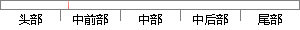

由于在声纹识别系统中，存在语音信号的易变形、训练样本数量的不确定性、外界噪声信号的干扰性等问题，声纹识别系统的特征参数提取方法需要进一步改进和提高。
片段位置图

相似结果|
1
原句片段：扰性等问题，声纹识别系统的特征参数提取方法需要进一步改进和提高。
相似片段 1：了声纹识别系统中的特征参数提取、模式匹配判断等...声纹识别技术的某一具体方法改进或某一缺点问题克服...为此,本文希望能够通过综述性地介绍声纹识别系统的 ...
相似片段 2：了声纹识别系统中的特征参数提取、模式匹配判断等...介绍声纹识别技术的某一具体方法改进或某一缺点问题...为此,本文希望能够通过综述性地介绍声纹识别系统的 ...
相似片段 3：身份识别技术的需求越来越多, 对其安全可靠性的...声纹识别技术的某一具体方法改进或某一缺点问题...声纹识别系统中的特征参数提取、 模式匹配判断等...
|
※ 片段修改建议 ※
近似词参考：- 由于：因为
- 信号：旌旗灯号
- 数量：数目
- 信号：旌旗灯号
- 干扰：滋扰
- 问题：题目
- 方法：方式 要领 法子
- 需要：必要
- 改进：改良 改善 革新
- 提高：进步
系统自动生成语句：因为在声纹识别系统中，存在语音旌旗灯号的易变形、训练样本数目的不确定性、外界噪声旌旗灯号的滋扰性等题目，声纹识别系统的特征参数提取方式必要进一步改良和进步。
注：本片段修改建议为系统自动生成，仅供参考。